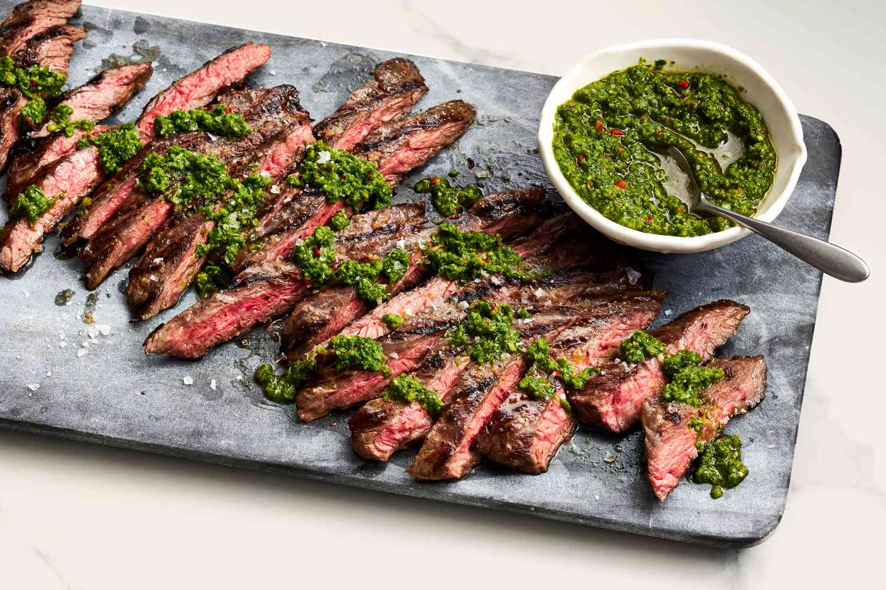

Chimichurri Steak

Description
Indulge in the mouthwatering delight of perfectly grilled ribeye steaks adorned with a
zesty chimichurri sauce. This Argentine-inspired masterpiece combines succulent, seared
steaks with a vibrant herb-infused blend, creating a symphony of flavors that elevate
your dining experience. Get ready for a culinary journey that celebrates the art of
grilling and the boldness of chimichurri!
Ingredients
- 2 ribeye steaks
- Salt and black pepper to taste
Chimichurri Sauce:
- 1 cup fresh parsley, finely chopped
- 3 cloves garlic, minced
- 1/2 cup extra-virgin olive oil
- 3 tablespoons red wine vinegar
- 1 teaspoon dried oregano
- 1/2 teaspoon red pepper flakes (adjust to taste)
- Salt and black pepper to taste
Steps
- Season the steaks with salt and black pepper on both sides.
- Preheat your grill or grill pan over medium-high heat.
-
Grill the steaks for about 4-5 minutes per side for medium-rare,
adjusting time based on your desired doneness
- While the steaks are grilling, prepare the chimichurri sauce.
-
In a bowl, combine chopped parsley, minced garlic, olive oil, red wine vinegar,
dried oregano, red pepper flakes, salt, and black pepper. Mix well.
-
Once the steaks are cooked to your liking, remove them from the grill
and let them rest for a few minutes.
- Spoon the chimichurri sauce over the steaks or serve it on the side.
- This is the most important step: Enjoy!